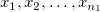
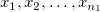
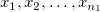
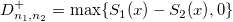
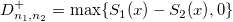
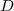
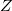

/math-8d88a43872d6db6535d8672a15f09ce2.png "n_1\,\!") und
und /math-ede03c8aef1b07c898c7747b489fd765.png "n_2\,\!") . Sie werden als  bzw.
. Sie werden als  bzw. /math-ba3bf26bc53cf72dd2f7e804e8351ba7.png "y_1,y_2,\ldots ,y_{n_1}\,\!") bezeichnet. Angenommen, F(x) und G(x) stellen ihre jeweiligen unbekannten Verteilungsfunktionen dar. Weiterhin wird angenommen, dass
bezeichnet. Angenommen, F(x) und G(x) stellen ihre jeweiligen unbekannten Verteilungsfunktionen dar. Weiterhin wird angenommen, dass /math-2eaa8777a1f571cbad7bfca3adf83c34.png "S_1(x)\,\!") und
und /math-17118f898c20f6dbf66463ce22714faa.png "S_2(x)\,\!") die Stichprobenwerte der empirischen Verteilungsfunktionen bezeichnen.
die Stichprobenwerte der empirischen Verteilungsfunktionen bezeichnen.Die Vorgehensweise unten basiert auf NAG-Algorithmen.
Es werden zwei unabhängige Stichproben betrachtet, X und Y, mit der Größe und . Sie werden als  bzw. bezeichnet. Angenommen, F(x) und G(x) stellen ihre jeweiligen unbekannten Verteilungsfunktionen dar. Weiterhin wird angenommen, dass und die Stichprobenwerte der empirischen Verteilungsfunktionen bezeichnen.
Die Nullhypothese: F(x)=G(x)
Die Alternativhypothese ist /math-fabff59271b950125b7a360fba21de2c.png "H_1\,\!") :F(x)<>G(x), der zugehörige p-Wert ist eine beidseitige Wahrscheinlichkeit;
:F(x)<>G(x), der zugehörige p-Wert ist eine beidseitige Wahrscheinlichkeit;
oder :F(x)>G(x), der zugehörige p-Wert ist eine obere Wahrscheinlichkeit,
oder : F(x)<G(x), der zugehörige p-Wert ist eine untere Wahrscheinlichkeit.
Im ersten Fall von stellt die Statistik /math-a9aca3b08301eb7213e2408c0ab85104.png "D_{n_1,n_2} \,\!") die größte absolute Abweichung der zwei empirischen Verteilungsfunktionen dar.
die größte absolute Abweichung der zwei empirischen Verteilungsfunktionen dar.
Im zweiten Fall von stellt die Statistik /math-4cd60644c5463cc66c7631c167ed3936.png "D_{n_1,n_2}^{+} \,\!") die größte positive Abweichung zwischen der empirischen Verteilungsfunktion der ersten Stichprobe und der empirischen Verteilungsfunktion der zweiten Stichprobe dar, das heißt .
die größte positive Abweichung zwischen der empirischen Verteilungsfunktion der ersten Stichprobe und der empirischen Verteilungsfunktion der zweiten Stichprobe dar, das heißt .
Im dritten Fall von stellt die Statistik die größte positive Abweichung zwischen der empirischen Verteilungsfunktion der zweiten Stichprobe und der empirischen Verteilungsfunktion der ersten Stichprobe dar, das heißt /math-6a6a55b10a26fafb59197daab9f6d53b.png "D_{n_1,n_2}^{-}=\max \{S_2(x)-S_1(x),0\}\,\!") .
.
KS-test2 gibt auch die Standardstatistik zurück,
wobei  vielleicht /math-3f75caf92b4b313ec5ec353b2df6a0b0.png "D_{n_1,n_2}\,\!") ,, abhängig von der Wahl der Alternativhypothese.
,, abhängig von der Wahl der Alternativhypothese.
Die Verteilung der Statistik  konvergiert asymptotisch zu einer Verteilung nach Smirnov, wenn und /math-2f6fac59fce80e76d698bcf5ea77bab6.png "n_2\,\!") steigen. Es wird die Wahrscheinlichkeit berechnet, unter der Nullhypothese einen Wert der Teststatistik zu erhalten, der so extrem ist, wie der beobachtete Wert.
steigen. Es wird die Wahrscheinlichkeit berechnet, unter der Nullhypothese einen Wert der Teststatistik zu erhalten, der so extrem ist, wie der beobachtete Wert.
Bei und steht eine genaue Methode nach Kim und Jinrich zur Verfügung. Ansonsten wird /math-c0f582773fdbd168bbab09a1e6159c46.png "p\,\!") berechnet mit Hilfe der von Kim and Jenrich (1973) vorschlagenenen Approximationen.
berechnet mit Hilfe der von Kim and Jenrich (1973) vorschlagenenen Approximationen.
Beachten Sie, dass die verwendete Methode nur für kontinuierliche theoretische Verteilungen verwendet wird.
Diese Methode berechnet die beidseitige Wahrscheinlichkeit. Die einseitigen Wahrscheinlichkeiten werden mit Hilfe der beidseitigen Wahrscheinlichkeit geschätzt. Dies ist eine gute Schätzung für kleine , das heißt /math-cd60a65bcbb8b47dc37b5c879ed79777.png "p\leq 0.10\,\!") , wird aber schwächer für größere .
, wird aber schwächer für größere .
Weitere Einzelheiten zum dem Algorithmus finden Sie unter nag_2_sample_ks_test (g08cdc).